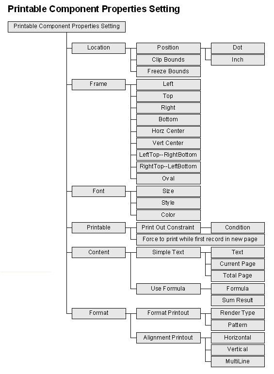

|

3.3 レポート作業デザイン (report design)
レポート作業デザイン手順 (report design
procedure)
- レポートプロパティ設定 (report properties
setting)
- レイアウト印刷可能コンポーネント (layout printable
components)
- 印刷可能コンポーネントプロパティ設定 (printable
component properties setting)
- 印刷テスト (test printing)

レポートプロパティ設定 (report properties
setting)
【レポートプロパティ設定】キーを押し，レポートプロパティの上に印刷用紙のサイズ・印刷方向及びプリービュー必要かどうか(preview)のリクエストをプリンターに転送することができます。
デザイン提示 (design tips)
- 専用プリンター (dedicated printer)
フォーミュラを用いてプリンターに名前を与えることができます，STRING形かフォーミュラ
(formula)の形でダイナミック
(dynamic)的にプリンター名の作成することができます。リモートプリンターを使う時，ネットワークパスと共用名を入力する必要があります。以下のようになります：\\プリンターサーバー名\PC名。
-
ブラウザプリンター作業の
Java™ セキュリティ対策 (Java™ print security policy)
Java™ はブラウザの上に実行される時，Java™
セキュリティ対策 (security policy) に管理されます，授権されないソースがローカルPCにアクセスができません。その中にローカルプリンターが含まれています。Java™
1.30 の JRE (Java runtime environment)の場合，ブラウザでプリンター作業を行う時，メッセージボックスが表示され，ユーザの確認の上で作業が続けられます。Java™
1.40 の JRE の場合，メッセージボックスが継続的に表示されます，それを変更したければ，
Java™ セキュリティ対策 (security policy)の中にローカルソースをアクセスできるように授権します。以下のように：
C:\Program
Files\Java\j2re1.4.0\lib\security\java.policy 内容追加 ：
HTTP
での起動 ：
grant codeBase "http://ソースIP或ローカル/-"
{
permission java.security.AllPermission;
};
ローカル (HTML) での起動 ：
grant codeBase "file:c:/HTMLファイルパス/-"
{
permission java.security.AllPermission;
};
上のソースIP或いはローカルはHTML の Web
ローカルIP或いは名前。c:/HTMLファイルパスはHTMLの起動パス。
レイアウト印刷可能コンポーネント (layout printable
components)
マウスで必要なコンポーネントを選択し，レポート上に持ってくると，十字マークが表示され，マウス左キーでクリックすれば結構です。
レイアウトコンポーネント (layout component)、コンポーネントセレクト、移動、編集
(select、move、edit components)、コンポーネント整列
(alignment)、コンポーネント複写、コピー、貼り付け
(duplicate、copy、paste)。
デザイン提示 (design tips)
- コンポネント位置 (position)
一つか多数コンポーネントを選択し，マウスかキーCtrl
プラス加 ←↑↓→ で移動することができます。
印刷可能コンポーネントプロパティ設定 (printable
component properties setting)

デザイン提示 (design tips)
プリンターテスト (test printing)
jLIVE
Builder™
レポートフローはデザインナーによって指定されたデータソース(data
source)からデータを最後までアウトプットします。このデータソース
(data source) はフォーム (form) と共用るか，或いはクエリー
(query) による結果がプリント制限
(print
constraint) プロパティにコントロールされます。プリンターフローとメカニズム
(printing flow and mechanical)参考

Copyright © 2001~
2004 Probe Technology . All Rights Reserved.
Questions, comments,
and suggestions to Service@probe.com.tw
|